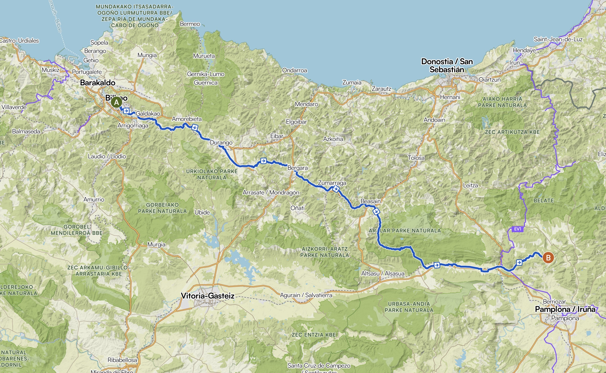

📍 Route
Bilbao → Pyrenäen
🚴 ca. 80 km · erste Etappe

.route {
max-width: 600px;
margin: 30px auto;
padding: 20px;
background: white;
border-radius: 12px;
box-shadow: 0 2px 10px rgba(0,0,0,0.1);
text-align: center;
}
.route img {
margin-top: 15px;
border-radius: 10px;
}